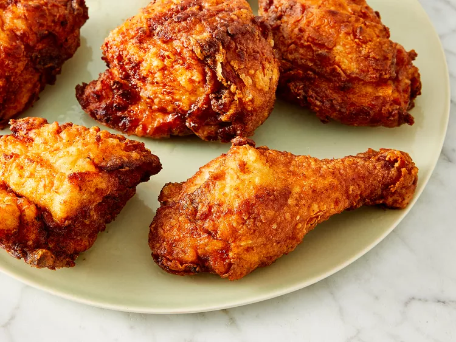

Fried Chicken Recipe

Description:
In the following sections we will be making incredibly juicy, spicy, fried chicken.
Ingredients:
- 1 chicken
- 1 cup buttermilk
- 2 cups all-purpose flour
- 1 teaspoon paprika
- 1 teaspoon cayenne pepper
- salt and pepper to taste
- 2 quarts vegetable oil for frying
Steps:
- Cut chicken into pieces
- Mix flour and spices in a plastic bag or mixing bowl
- Dip chicken in buttermilk and toss thoroughly in flour mixture
- Move chicken to a baking tray and cover with wax paper until the coating
is a paste-like consistency
- Fill a large pot 1/2 full with vegetable oil and heat until extremely hot
- Add chicken to oil carefully until both sides are browned
- Reduce heat and cover for 30 min
- Remove lid and raise heat until crispy